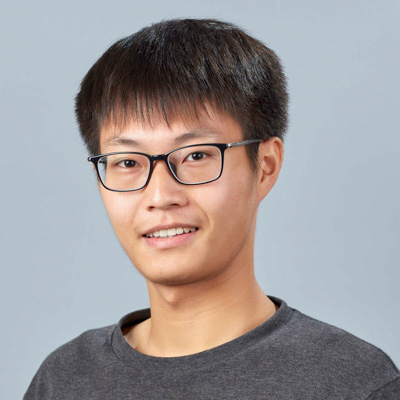

|

Xian Shuai 帅先
shuaixiannee at hotmail.com
Room 727, SHB, CUHK, Hong Kong
I am currently a fourth year Ph.D student in AIoT Lab at the Chinese University of Hong Kong (CUHK), advised by Professor Guoliang Xing. I got my Bachelor degree from School of Physics, University of Science and Technology of China (USTC) in 2018. My research interests lie in the Sensing and Computing for Embedded AI Systems.
|